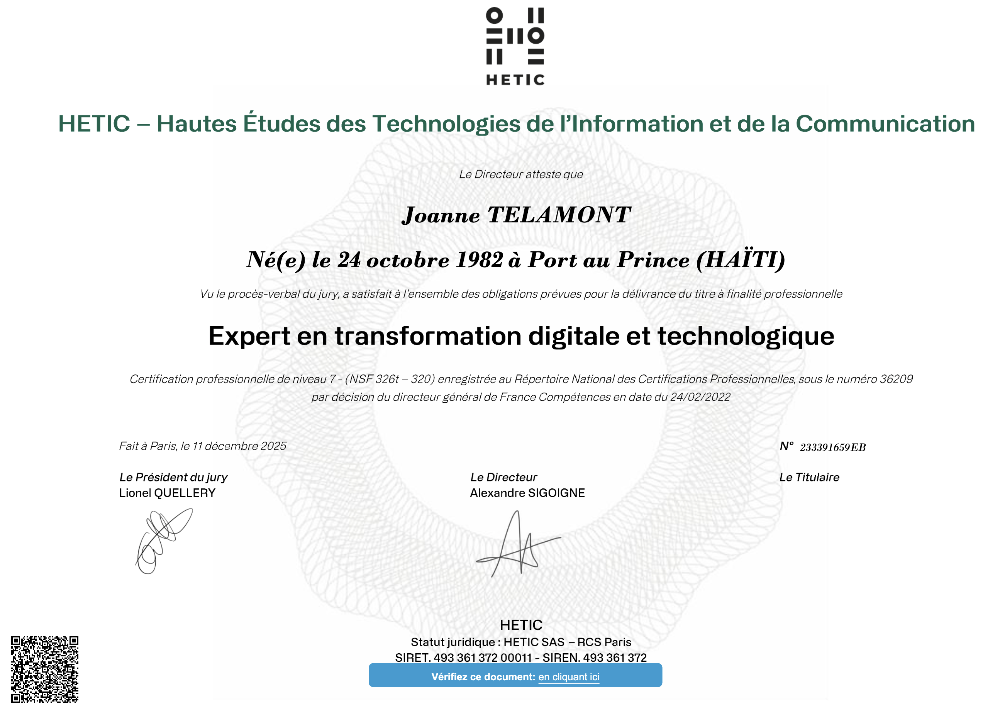
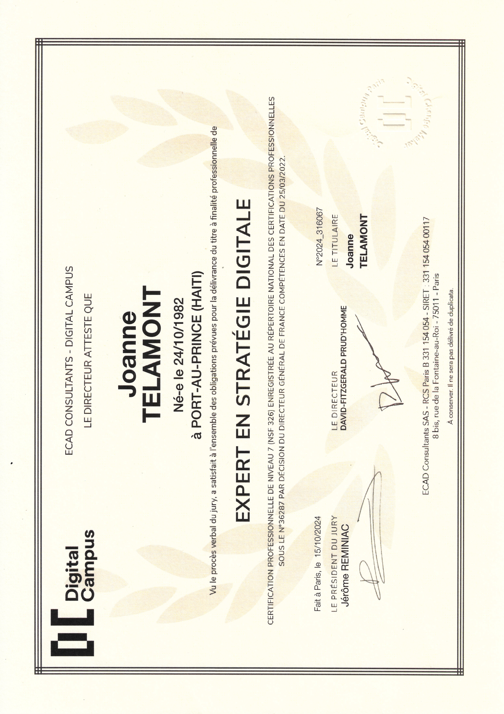
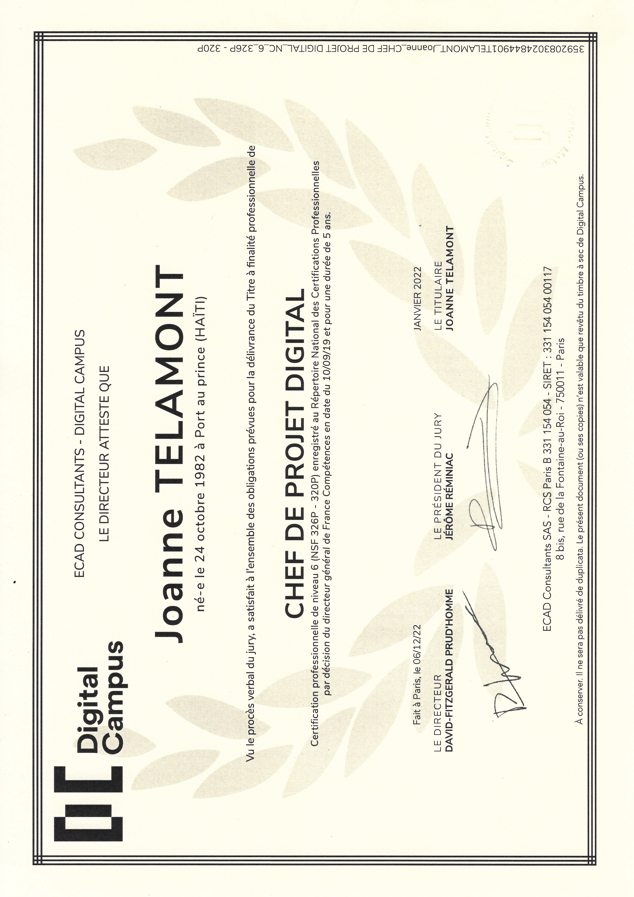
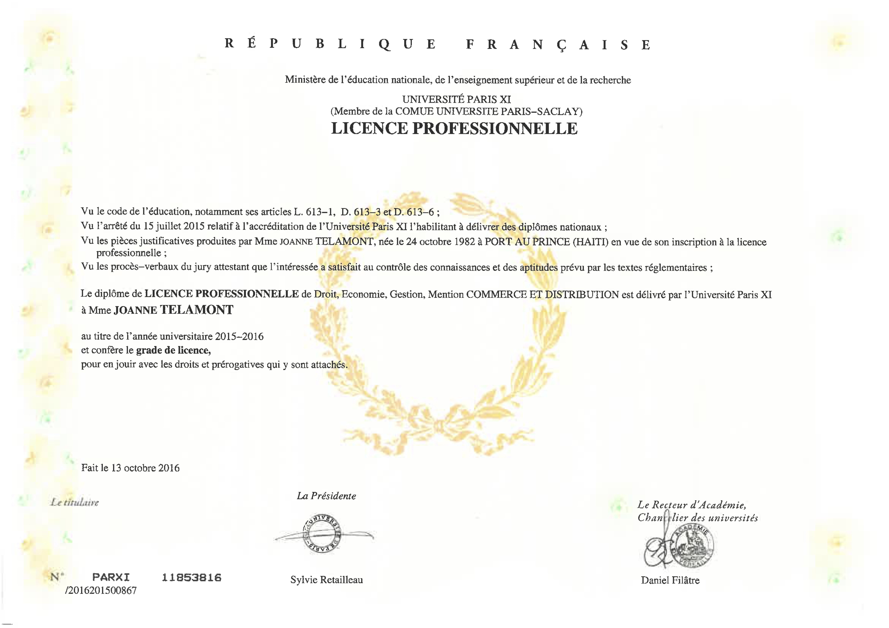

Mon cursus et mes diplômes
Diplômée d'un double Master Expert en Stratégie digitale / Expert en Transformation Digitale et Technologique, mon parcours académique conjugue gestion de projet, UX/UI design et culture data, construit progressivement au fil de mes formations.
Hard skills
Design
- Adobe XD
- Axure
- Canva
- Figma
- InDesign
- Inkscape
- Illustrator
- Photoshop
Management de projet
- Confluence
- Jira
- Miro
- Monday
- Mural
- Trello
- SharePoint
Webmarketing et Analytics
- Brevo
- Mailchimp
- Google Ads
- Google Analytics
- Google Tag Manager
- Hotjar
- SEMrush
- Ubersuggest
- Power BI
- Salesforce
Web et CMS
- HTML5
- CSS3
- PHP
- Local
- Sublime Text
- Visual Studio Code
- WordPress
- Teams
Data
- Python (Pandas et NumPY)
- Dataiku
- GitHub
- Jupyter Notebook
- Looker Studio
- Google Colab
Progiciel
- AS400
- Baan IV et V
- Ciel
- Contrathèque
- SAP
- Works Cycle
Soft skills
- Créative
- Volontaire mais réaliste
- Capacité à prioriser
- Capacité à développer et entretenir un réseau
- Coordination métiers / IT
- Sens de l'initiative
- Adaptabilité
- Flexibilité
- Animation d'atelier
- Aime les défis
Langues
- Anglais — C1 (Professionnel)
- Espagnol — A2 (Élémentaire)
- Allemand — A2 (Élémentaire)
Formations et expériences professionnelles
Association Latitude
Open data university
- Mentora -> accompagnement d’équipes d’étudiants dans le développement de leurs projets
- Animation des ateliers de prévention sur la cybersécurité

Master 2 — Expert en transformation digitale et technologique
Digital Campus Paris
Approfondissement du pilotage de projets digitaux, de la stratégie de transformation et de la coordination transverse.
UX/UI Design
La Haute Autorité de Santé (HAS)
- Organisation de sessions de formation avancée en UX/UI design pour renforcer les compétences de l'équipe interne
- Conception et animation d'un atelier de design thinking de 2h pour 12 participants
- Recueil des besoins utilisateurs et priorisation des fonctionnalités avec les équipes métiers
- Conception de parcours et prototypes UX/UI sur Figma pour plusieurs applications internes

Master 1 — Expert en stratégie digitale, option UX Design
Digital Campus Paris
Spécialisation en conception UX/UI, recherche utilisateur et stratégie digitale.
Assistante marketing
Growth from Knowledge (GfK)
- Coordination du suivi de projets data et reporting impliquant les équipes métiers, IT et data
- Superviser la migration de données vers de nouvelles plateformes pour assurer la continuité des opérations
- Participation à la rédaction de cahiers des charges et au suivi de roadmap
- Analyse de bilans distributeurs, présentation de comptes-rendus de webinaires et rédaction de newsletters
- Réalisation de benchmarks et synthèses stratégiques dans un environnement transverse
Bootcamp Data Analyst — Data Scientist
Artefact School of Data
Formation intensive aux fondamentaux de la data (analyse, visualisation, outils de data science).

Licence — Chef de projet digital
Digital Campus Paris
Bases de la gestion de projet digital : cadrage, coordination d'équipes et suivi opérationnel.
Agent commercial de vente — Chef d'embarquement
SNCF
- Accueil, information et accompagnement des voyageurs dans un environnement opérationnel exigeant
- Application rigoureuse des procédures et contribution à la qualité de service
- Coordination avec les différents interlocuteurs intervenant dans l’exploitation
- Contribution à la qualité de service et à la fluidité des opérations
- Daily, debriefing, reporting...
- Gestion des situations imprévues et traitement des incidents en temps réel
- Gestion des embarquements, encadrement d’une équipe de 4 à 10 agents
- Gestion des priorités dans un environnement rythmé et soumis à des contraintes opérationnelles
- Travail en environnement rythmé nécessitant réactivité, organisation et sens du collectif.
Administratrice achats — Acheteuse
Groupe Safran
- Analyse des écarts et identification des actions correctives
- Automatiser le reporting financier mensuel pour garantir une meilleure précision et rapidité d'exécution
- Élaborer des plans d'action pour réduire les erreurs de facturation et améliorer la satisfaction client
- Collaboration avec les équipes finance, logistique, achats et ingénierie
- Gestion et suivi d'un budget de 3 M€ par trimestre pour le traitement des litiges factures
- Suivi des indicateurs de performance et des processus
Assistante web marketing
SaaSwedo
- Création et actualisation de documentation (audit, refonte, mise aux normes)
- Coordination de la production de contenus multimédias avec les équipes créatives
- Gestion et mise à jour de contenus digitauxGestion et mise à jour de contenus digitaux
- Programmation, publication et suivi de contenus en ligne
- Reporting et identification de pistes d’amélioration
- Suivi de la performance digitale via Google Analytics
- Support et accompagnement des utilisateurs

Licence professionnelle — Commerce et distribution, option Marketing
IUT de Sceaux
Fondamentaux du commerce, de la distribution et du marketing.